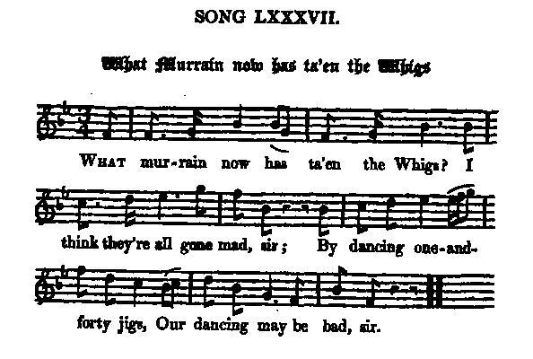

What murrain now has ta'en the Whigs?
Quelle mouche a piqué les Whigs?
Author unknown
Tune - Melodie"What murrain now has ta'en the Whigs?"
from Hogg's "Jacobite Reliques" part I, N° 87
Sequenced by Christian Souchon

|
To the tune
"This is a popular ballad, to an old original air ; but neither have ever been published. There must have been some great original collection of Jacobite songs, from which others copied what suited or pleased them. This song, with the three preceding ones ( O Beautiful Britannia , Nobody can Deny , James kiss me now ) , were all in Mr Walter Scott's, Mr John Stewart's, Mr J. Graham's, and Mr R. Gordon's MS. collections." James Hogg in "Jacobite Relics", 1819. See also "What merriment has ta'en the Whigs? |
A propos de la mélodie:
"Voici un texte connu, sur un air ancien original. Mais ni l'une, ni l'autre n'ont jamais été publiés. Il doit avoir existé un grand recueil de chants Jacobites où d'autres collecteurs puisé, pour le recopier, ce qui leur convenait ou ce qui leur plaisait. Le présent chant ainsi que les trois précédents ( O Beautiful Britannia , Nobody can Deny , James kiss me now ) se retrouve dans les collections de manuscrits de MM. Walter Scott, John Stewart, J. Graham et R. Gordon." James Hogg in "Jacobite Relics", 1819. Cf également "What merriment has ta'en the Whigs? |

|
WHAT MURRAIN NOW HAS TA'EN THE WHIGS?
1. What murrain [1] now has ta'en the Whigs? I think they're all gone mad, sir; By dancing one-and forty jigs, [2] Our dancing may be bad, sir. 2. The revolution principles Have set their heads in bees, then; They've fallen out among themselves, Shame fa' the first that grees them ! 3. Did ye not swear, in Anna's reign, And vow, too, and protest, sir, If Hanover were once come o'er, Then we should all be blest, sir ? 4. Since you got leave to rule the roast, Impeachments throve a while, sir: Our lords must steer to other coasts, Our lairds may leave the isle, sir. 5. Now Britain may rejoice and sing, 'Tis once a happy nation, Governed by a German thing, Our sovereign by creation! 6. And whensoe'er this sovereign fails, And pops into the dark, sir, O then we have a prince of Wales, The brat of Koningsmark, sir. [3] 7. Our king he has a cuckold's luck, His praises we will sing, sir, For to a petty German duke He's now' a British king, sir. 8. He was brought o'er to rule the greese, But, faith, the truth I'll tell, sir; When he takes on his good dame's gees, [4] He cannot rule himsel, sir. 9. And was there ever such a king As our brave German prince, sir ? Our wealth supplies him every thing, Save that he wants good sense, sir. 10. Whilst foreigners traverse our isle, And drag our peers to slaughter, This makes our gracious king to smile, Our prince bursts out in laughter. 11. Our jails with British subjects cramm'd, Our scaffolds reek with blood, sir; And all but Whigs and Dutch are damn'd By the fanatic crowd, sir. 12. Come, let us sing our monarch's praise, And drink his health in wine, sir; For now we have braw happy days, Like those of forty-nine, sir.[5] Source: "The Jacobite Relics of Scotland, being the Songs, Airs and Legends of the Adherents to the House of Stuart" collected by James Hogg, published in Edinburgh by William Blackwood in 1819. |
QUELLE MOUCHE A PIQUE LES WHIGS?
1. Quelle mouche [1] a piqué les Whigs? Quelle folie subite? Comme en quarante-et un, [2] c'est la gigue Qu'ils dansent: je crains la suite. 2. Comme sous la révolution On peut voir le mal poindre: Ils sont en proie aux dissensions. Mais honte à qui veut les plaindre. 3. Lorsque la Reine Anne régnait Vous fîtes la promesse Qu'une fois Hanovre couronné Nous en serions tous bien aise. 4. Depuis qu'on vous voit aux fourneaux Les destitutions pleuvent: Nos lords doivent prendre le bateau; Quant à nos lairds ils le peuvent. 5. La Grande Bretagne est en joie. Qu'elle a donc de la chance! D'avoir un vague Teuton pour roi, Choisi par la Providence! 6. Si la mort vient à nous priver De ce précieux monarque, Un Prince de Galles nous est né Des œuvres de Koenigsmarque. [3] 7. Tu as la chance d'un cocu Qui vaut bien qu'on t'acclame Petit duc allemand devenu Le Roi de Grande Bretagne. 8. On chassait la grouse autrefois, Mais toi, cruel dilemme, Quand ta dame te montre ses oies [4] N'appartiens plus à toi-même. 9. Avons-nous eu jamais un roi Tel que ce brave Prince? Il puise dans nos poches de quoi Se gaver, mais non de science. 10. Quand l'île est pleine d'étrangers Tuant les pairs du royaume, On voit Sa gracieuse Majesté S'esclaffer, ah, le brave homme! 11. C'est de britanniques sujets Que nos geôles sont pleines, Et Whigs et Bataves exceptés, A l'échafaud on les mène. 12. Chantons la louange du roi, Au roi levons nos verres! Hache et billot l'attendent, de quoi [5] Nous réjouir comme naguère! (Trad. Christian Souchon(c)2010) |
|
[1]
Murrain
: cattle plague from the French "moraine" or "morine" (from "mort"="death") meaning "dead sheep's fleece".
This first line and the title are sometimes replaced by "O what's the matter with the Whigs?" [2] Forty-one : 1641; beginning of the English civil War, when King Charles I. was first challenged by the Parliament and the Puritans. The song may allude to similar events in the reign of George I. [3] Koenigsmarck : See Came Ye frae France? (the Jacobites supposed that the Prince of Wales , the future King George II was born of adultery). [4] Geese : See Came Ye frae France? (the "goose" was the nickname of one of George's favourites, Melusine von der Schulenburg). [5] Forty-nine : 1649. Alludes to the execution of King Charles I. Gilbert Samuel McQuoid in his "Jacobite Songs and Ballads" (ed. 1888) suggests that "this song must have been written on the accession of the Whigs to power in the beginning of George the First reign, since it is equally caustic as to that party and as to the monarch himself". |
[1]
Mouche
: le mot anglais désigne une forme de galle. Il vient du mot français "moraine" ou "morine" (de "mort") qui désigne, à son tour, la toison d'un mouton mort.
La 1ère ligne et le titre sont parfois remplacés par "Aux Whigs qu'est-il donc arrivé?" [2] Quarante-et-un : 1641, début de la guerre civile en Angleterre, c'est l'année où Charles I. fut pour la première fois défié par le parlement et les Puritains. Le chant semble évoquer des événements similaires sous le règne de Georges I.. [3] Koenigsmarck : Cf. Came Ye frae France , les Jacobites supposaient que le Prince de Galles, futur roi Georges II, était un enfant adultérin. [4] Oies : Cf. Came Ye frae France? ("l'Oie" était le surnom d'une des favorites de Georges, Melusine von der Schulenburg). [5] Quarante-neuf : 1649. Allusion à l'exécution du roi Charles I. Gilbert Samuel McQuoid dans ses "Jacobite Songs and Ballads" (ed. 1888) suggère que "ce chant a été écrit lors de l'arrivée au pouvoir des Whigs au début du règne de Georges I, car il crible de traits caustiques tant ce parti que le monarque lui-même". |
|
|
|